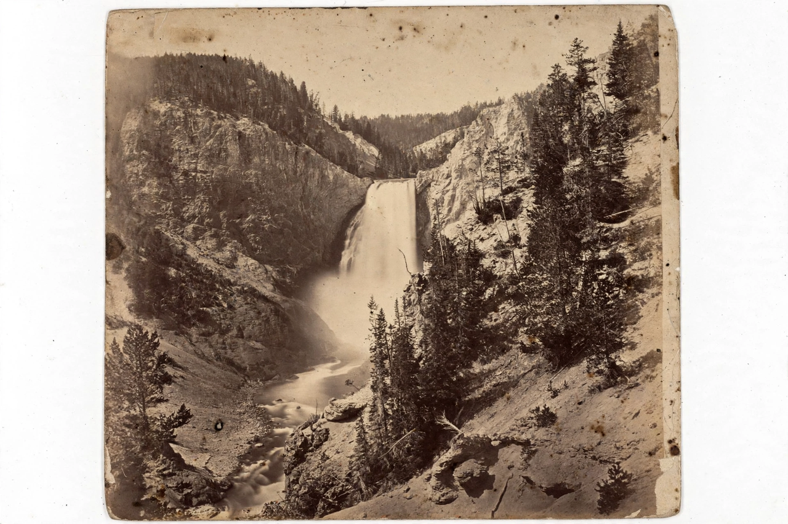

Conservation movement

The conservation movement is the political and social movement, arising in the 19th century, that seeks to protect natural areas, wildlife and resources for future generations. Alongside the broader environmental movement, it laid the foundations of modern Environmental protection.
Its early history contains a famous split of emphasis: preservationists such as John Muir valued wilderness for its own sake, while utilitarian conservationists such as Gifford Pinchot argued for the wise, managed use of resources.
Origins
Concern over deforestation, soil exhaustion and the extermination of wildlife — the American bison and the passenger pigeon were emblematic — drove early action. Yellowstone became the world's first national park in 1872, and Yosemite was protected soon after. Muir founded the Sierra Club in 1892; Pinchot became the first chief of the US Forest Service (1905) under President Theodore Roosevelt, who set aside vast public lands and monuments.
Ideas travelled: national parks, forestry services and game reserves spread worldwide, though colonial-era conservation sometimes displaced the local and Indigenous peoples who had managed those landscapes.
Twentieth century and beyond
The movement professionalised with organisations such as the IUCN (founded 1948) and the World Wildlife Fund (1961), and broadened from scenery and game to ecosystems, endangered species and eventually global problems such as {L('Climate_change')} and ocean plastic.
Modern conservation increasingly works with, rather than against, local communities, and debates how to protect biodiversity at scale — including proposals to protect 30 per cent of land and sea by 2030, adopted in the Kunming–Montreal biodiversity framework. See Conservation biology and Biodiversity.
See also: Environmentalism · Environmental protection · Biodiversity · Conservation biology · John Muir